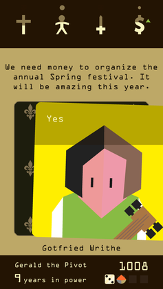
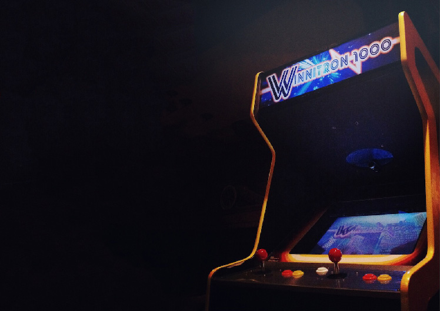

Life Choices — юмористическая аркадная игра про быстрые жизненные выборы: игроку
прилетают карточки-ситуации («сомнительный договор с мелким шрифтом», что-то
приятное, что-то опасное), решение — принять или отклонить — нужно принять
быстро, в открытое окно времени. Каждое решение накидывает аффект на
персонажа, а накопленные решения складываются в итог прожитой жизни —
смешной, абсурдный, иногда мрачный пересказ того, как всё прошло. Целевой сетап —
аркадный автомат с физическими кнопками, минимум «да/нет», но, возможно, не
только. Референс от основательницы — Papers, Please.
Ниже — ресерч по шести открытым вопросам из брифа. Метод: 5 поисковых
направлений → 21 источник → 101 извлечённое утверждение → адверсарная проверка
топ-25 самых важных claim'ов (каждый independently проверяли 3 верификатора) →
22 подтверждено, 3 отклонено. Дальше в отчёте — только то, что прошло проверку,
плюс отдельно вынесенные отклонённые заявления, на которые опираться нельзя.
Плоская шкала денег/успеха — подтверждённо слабый ориентир. Работающие
альтернативы: многомерный баланс нескольких ресурсов (Reigns) или
материализация состояния через конкретных людей и их нужды (Papers, Please).
Интуиция основательницы, что шкала «непоказательна», ресерчем подтверждена.
Passage — прямое предупреждение против числа как итога жизни. Автор
игры намеренно сделал счёт бессмысленным: если финал сводится к цифре, он
эмоционально пуст.
Итог жизни цепляет, когда он двухслойный. BitLife: подробный отчёт
(надгробие со статистикой) + один ёмкий ярлык-«лента» с эмодзи. Плюс одно
конкретное, часто нарочито мелкое воспоминание, привязанное к реальному
прохождению, — это главный источник юмора и «залипательности».
Мерило и мгновенный фидбек — по сути одна механика. В Reigns каждый
бинарный свайп сразу двигает 4 видимые шкалы; по словам автора, именно эта
привязка последствий к простому жесту придала ему смысл.
Спешка весёлая, а не бесящая, когда карточка считывается как микроигра
WarioWare — одна картинка + один глагол-команда + предельно простой ввод
(в оригинале — часто одна кнопка). Точный тайминг окна решения ресерч не
подтвердил — это на плейтесты.
Две кнопки — проверенный путь, а не риск. Dobotone, Canabalt, Winnitron
прямо валидируют минимальное управление; для да/нет-карточек это готовая
формула. Ходящий персонаж, вероятно, потребует джойстика — но это дизайн-догадка,
не подтверждённый факт (сравнение «карточки vs ходьба» ресерч не нашёл).
Формат кабинета: сессия ≈3 минуты, максимум 2 кнопки на игрока
(Winnitron), и аркадный контекст сам по себе превращает провал в смешное, а не
фрустрирующее — игроки у автоматов смеются над своими неудачами.
Риск: голые две кнопки «да/нет» сами по себе не проходят планку
alt.ctrl.GDC («взаимодействие, невоспроизводимое на стандартном
контроллере») — ценность физического кабинета придётся добирать формой
(большая кнопка, физический таймер, зрительский театр вокруг выбора).
1. Мерило успеха / состояния жизни
Вопрос из брифа: шкала денег/успеха кажется непоказательной и плохо считываемой.
В чём тогда измерять состояние жизни?
Reigns: баланс вместо накопления
confidence: highverify 3-0
Состояние игрока в Reigns — не одна шкала, а баланс четырёх ресурсов («столпов
власти»): церковь, народ, армия, деньги. Проигрыш наступает, когда любая
из шкал уходит в 0 или в максимум — то есть плохо не только «слишком
мало», но и «слишком много». Успех — это удержание баланса, а не максимизация
одного числа.

Reigns — свайп-карточка и четыре иконки-шкалы сверху (крест / человек / плюс-армия / мешок денег).
Источник: Wikipedia, File:Reigns Gameplay.png.
«you had to balance the 4 pillars of your power (church, people, army and
money)» — «you end up dying in gruesome and colorful ways».
Многомерный баланс закрывает сразу два вопроса — мерило (1) и мгновенный фидбек
(3), потому что это одна и та же механика: видимый сдвиг нескольких шкал на
каждый выбор. Риск переизбытка («слишком хорошо — тоже плохо») хорошо ложится на
юмористический тон: смерть от «слишком много счастья» — готовый абсурдный финал.
Papers, Please: мерило материализовано через людей
confidence: highverify 3-0
В Papers, Please нет вообще никакой шкалы морали или кармы — игра даже не
маркирует выборы как «добрые» или «злые». Деньги в игре есть, но выражены не
числом ради числа: в конце каждого дня зарплата уходит на аренду, еду, отопление
и лекарства для семьи инспектора. Моральный вес решений живёт в эмоциональном
состоянии игрока, а не в интерфейсе.
«That money is then used at the end of each day to pay the living expenses
for your family — rent, food, heat and medicine.»
«…actions do have consequences, but most of it relies on the emotional state
and investment of the player.»
Источник: PopMatters
(вторичный, игровая критика), корроборировано вики игры, Wikipedia и рецензируемой статьёй Morrissette в Game Studies:
числовой шкалы морали нет, дилеммы возникают из нейтральных систем и эмпатии игрока.
Что это значит для Life Choices
«Успех» можно выражать через конкретных людей и их нужды вместо абстрактного
числа — но важно помнить, что под капотом всё равно должны быть механические
последствия (деньги, здоровье, отношения), просто не выведенные в лоб как шкала
морали.
Passage: предупреждение против числа как мерила жизни
confidence: highverify 3-0
Джейсон Рорер, автор Passage, сознательно сделал игровой счёт бессмысленным —
очки «висят над надгробием» как осознанный авторский аргумент против числа как
итога прожитой жизни.
«Your score looks pretty meaningless hovering there above your little
tombstone.»
Если финал Life Choices сведётся к голому числу («вы набрали 1400 очков») —
ресерч прямо говорит, что это будет эмоционально пусто. Число, если оно вообще
нужно, должно быть подано как побочный эффект, а не как главный итог.
Вывод-опции по вопросу 1
Три рабочих направления, каждое подтверждено референсом: (а) многомерный баланс
а-ля Reigns; (б) материализация через конкретных людей/нужды а-ля Papers, Please;
(в) вообще без чисел, чисто сценарно (аргумент Passage). Плоская шкала денег —
подтверждённо слабый вариант.
2. Итог жизни (финал)
Как из потока решений собирается финал? Сколько финалов, как игра «рассказывает»
прожитую жизнь, чтобы это было смешно и цепляло?
BitLife: трёхчастная формула смешного финала
confidence: mediumverify 3-0 (все три claim'а)
Самый прямой референс для финала Life Choices. Финал BitLife собран из трёх слоёв:
Надгробие — подробная статистика прожитой жизни (возраст, причина
смерти, баланс счёта, шкалы happiness/karma на момент смерти);
«Лента»-ярлык — одна ёмкая категория с эмодзи (~40 штук: «Unlucky»,
«Hero», «Wicked» и т. п.), символизирующая, чем в целом была эта жизнь;
Одно конкретное воспоминание «анонимных друзей», привязанное к
реальному событию прохождения — часто нарочито мелкое или абсурдное
(«Friends laugh when remembering the time they defrauded a casino», ~80
задокументированных шаблонов). Это главный источник юмора и «цепкости».
Плюс социальный итог: на похороны приходят только родственники с хорошими
отношениями на момент смерти — то есть мерило жизни частично выражено через
людей, а не через шкалы.
BitLife — экран «Ribbons»: набор ёмких категорий-ярлыков с эмодзи, из которых собирается «лента» на надгробии.
Источник: BitLife Wiki (Fandom), File:Ribbons.png.
Источник: BitLife Wiki (Fandom)
— фан-вики, но проверена напрямую через MediaWiki API (список ~80 шаблонов
воспоминаний с процедурными слотами присутствует в wikitext), корроборирована
GameRant, Destructoid, TheNerdStash, Twinfinite.
Что это значит для Life Choices
Готовый рецепт финала: детальный отчёт (что случилось) + один ёмкий ярлык
(эмоциональное резюме) + одно абсурдно-конкретное воспоминание, сгенерированное
из реальных решений игрока в конкретном прохождении. Именно третий элемент —
источник смеха, и его нужно строить как процедурную вставку, привязанную к
конкретным принятым карточкам, а не как общий шаблон.
Passage: длина сессии и тон memento mori
confidence: highverify 3-0
Вся жизнь персонажа — от молодости до смерти — сжата в 5-минутную сессию, смерть
одна и неизбежна («memento mori», а не игра про победу).
«a memento mori game… presents an entire life, from young adulthood through
old age and death, in the span of five minutes» — «you die only once, at the
very end.»
Ориентир длины сессии (сжатая, но полная «жизнь») и тон — единственная и
неизбежная смерть в конце, без «победы» как таковой. Это совпадает с бюджетом
сессии ~3 минуты из вопроса 6 (см. ниже, Winnitron).
Reigns: как из карточек собирается связная «жизнь»
confidence: highverify 3-0
Адаптивный нарратив Reigns строится на вероятностном «мешке» карт, который
расширяется и сжимается по состоянию игры: нет королевы — нет карт про королеву;
идёт война — военные карты выпадают чаще и «весят» больше. Так получается
связная «жизнь» без ветвящегося дерева сценариев.
«Imagine a bag with the interesting ability to expand and shrink» — карты
про королеву убираются из «мешка», если королевы нет; во время войны военные
карты укрупняются.
Источник: Game Developer, постмортем автора (первичный источник), независимо корроборировано разбором storylet-дизайна (videlais.com, 2021).
Что это значит для Life Choices
Готовый технический рецепт: пул да/нет-карточек с весами выпадения, зависящими
от текущего состояния персонажа/аффектов. Не нужно писать ветвящееся дерево —
достаточно правил «эта карта уместна/более вероятна, если...».
Оговорка по вопросу 2
Прямой ответ на вопрос 2 из брифа закрыт только двумя играми — BitLife и Passage.
Alter Ego и Death and Taxes, а также структура/количество финалов самого Reigns, в
подтверждённые находки не попали (см. раздел «Открытые вопросы» и «Оговорки»).
3. Фидбек на решение
Как игрок сразу понимает, что выбор на него повлиял (аффекты, настроение,
состояние персонажа)?
Reigns: фидбек и мерило — одна и та же механика
confidence: highverify 3-0
Мгновенный фидбек в Reigns — это видимый сдвиг четырёх шкал на каждый свайп.
Механика мерила состояния и механика фидбека буквально совпадают: один и тот же
жест одновременно двигает шкалы и показывает игроку, что он их подвинул (см.
скриншот и цитату в разделе 1).
«As soon as we weighted the decisions of the player with consequences on the
4 dimensions of power, we gave a lot of meaning to very simple swiping
gestures.»
Не проектировать фидбек отдельно от мерила состояния — если аффекты персонажа
видимы (шкалы, иконки, цвет), сам факт их сдвига на выбор уже и есть фидбек.
Дополнительно в источниках всплывала классика «game feel»/«juice» (микро-твики
анимации и звука за доли секунды) — но этот материал не попал в верифицированный
топ-25, поэтому в отчёт как факт не включён; как общая практика индустрии он всё
же стоит упоминания при последующем плейтесте.
4. Давление времени
Как устроено окно решения в играх с таймером — что делает спешку весёлой, а не
раздражающей?
Спешка в WarioWare не раздражает, потому что микроигры предельно просты по трём
осям: фикция (контекст), цель (один глагол — «Catch!»,
«Avoid!») и ввод (в GBA-оригинале большинство микроигр — одна кнопка A,
многие — только влево/вправо). Игрок считывает, что от него хотят, за секунды —
и именно тогда таймер превращается в источник веселья, а не раздражения.
«Most games use only the A button for player input, and many others use only
the left and right directional buttons.»
«WarioWare's micro games… are so simple in terms of fiction, goal structure,
and agency, that they are quickly grasped.»
Источник: Chaim Gingold, Game Studies, 2005
— рецензируемый академический журнал (первичный источник в смысле авторского анализа). Оговорка: простота —
первый из трёх механизмов Гингольда (ещё знакомость образов и чёткие границы
между играми); статистика про кнопки — про GBA-оригинал 2003 г., а не про всю
франшизу.
Что это значит для Life Choices
Формула для карточки Life Choices: одна картинка + один глагол + две кнопки =
считываемость уровня микроигры WarioWare. Это прямая и проверенная формула для
юмористического тайм-прессинга.
⚠ важная оговорка внутри вопроса 4
Числа «24 микроигры по ~5 секунд» как эталон тайминга не подтвердились при
верификации (0-3) — см. раздел «На это опираться нельзя». Точную длину окна
решения для Life Choices придётся тюнить своими плейтестами, эталона в
исследованных источниках нет.
5. Управление: да/нет vs ходящий персонаж
Чистые «да/нет» карточки — или персонаж, который ходит по миру и встречает
выборы? Что даёт каждый вариант?
Двухкнопочность — проверенный путь, не рискованный
confidence: mediumverify 3-0 (все три claim'а)
Dobotone — пати-консоль на 4 игроков, у каждого только 2 кнопки и никакого
джойстика. Разработчики прямо говорят: контроллер полностью определяет дизайн, а
игры обязаны быть интуитивны без туториалов — «на туториалы нет времени».
Canabalt — эталон одной кнопки: единственное действие — тайминг прыжка.
Игра работала на вебе, телефонах и в физических инсталляциях, попала в
коллекцию MoMA.
Dobotone, Эрнан Саэс (Game Developer, 2016): «The games have to totally rely
on intuitiveness… There's no time for tutorials.»
Источники: Dobotone — Game Developer, корроборировано shakethatbutton.com (название — от исп. «dos botones»). Canabalt — Stuff.tv, Wikipedia, страница коллекции MoMA. Смежный прецедент — Risky Bison (джойстик + 1 кнопка, не чисто двухкнопочный кейс).
Что это значит для Life Choices
Бинарные да/нет-карточки на двух кнопках — проверенный, а не рискованный путь;
сразу несколько независимых прецедентов (Dobotone, Canabalt, и Winnitron из
вопроса 6) подтверждают жизнеспособность минимального ввода для аркадных
сетапов. Ходящий персонаж почти наверняка потребовал бы джойстика и удлинил бы
вход в игру — но это дизайн-рассуждение по аналогии, а не подтверждённый факт:
прямых сравнений «карточки vs ходьба» ресерч не нашёл, и соответствующее
универсальное правило было отклонено при проверке (см. ниже).
6. Формат аркадного автомата
Есть ли референсы игр, сделанных под кабинет с двумя кнопками / простыми
контроллерами? Что там работает?
Winnitron: официальный дизайн-гайд для публичного кабинета
confidence: highverify 3-0
Официальная вики сети инди-кабинетов Winnitron прямо задаёт бюджет: сессия не
длиннее ~3 минут (чтобы у публичного автомата быстро ротировались игроки) и
максимум 2 кнопки на игрока — намеренно, чтобы кабинет не пугал случайных
прохожих.

Winnitron 1000 — кабинет с подсвеченной вывеской и минималистичной панелью управления.
Источник: winnitron.com (официальный сайт проекта).
«have your game sessions last max 3 mins as people will be more likely to
let others play» — «there is only 2 buttons per player, to keep things
approachable and unintimidating.»
Источник: официальная вики Winnitron (первичный источник). Оговорка: стандартная панель Winnitron включает ещё и джойстик на игрока — кабинет не чисто двухкнопочный.
Что это значит для Life Choices
Прямая валидация схемы «да/нет» на двух физических кнопках и готовый бюджет
длины одной «жизни» — около 3 минут. Это совпадает с ориентиром длины сессии из
Passage (вопрос 2).
Уроки портирования инди-игр на кабинеты
confidence: mediumverify 3-0 (все три claim'а)
Малое время игрока у автомата — полезное ограничение, которое заставляет
делать более компактный и элегантный дизайн (Santa Ragione о Wheels of
Aurelia).
Аркадный контекст меняет восприятие провала: игроки смеются над
неудачами вместо фрустрации — потому что от аркады заранее ждут высокой
сложности. Это напрямую поддерживает юмористическую подачу провальных «жизней»
в Life Choices.
Игра должна читаться с первого взгляда; полноценному аркадному релизу
нужны attract mode и таблица рекордов (кейс Risky Bison).
«knowing that people would have very little time… helped us focus on a
sharper, more elegant design.»
«we saw players laughing at their failures instead of getting frustrated.»
«players need to feel they can jump right in… know at a glance what your
game is.»
Источник: Joel Couture, Game Developer, 2016
(вторичный источник, интервью с разработчиками), требования attract mode + score
system подтверждены гайдлайнами Fantastic Arcade. Оговорка: пункт про компактность дизайна — мнение одного разработчика, обобщённое статьёй; причинность «провал → смех» — вывод из соседних фраз, а не проверенный психологический механизм.
Что это значит для Life Choices
Юмористическая подача смерти/провала — не только тон сценариев, но и следствие
самого аркадного контекста: у автомата провал воспринимается как часть
развлечения. Открытый вопрос — что показывать в таблице рекордов, если игра
сознательно отказывается от плоского счёта (см. «Открытые вопросы»).
Планка alt.ctrl.GDC: риск для голых двух кнопок
confidence: highverify 3-0
Официальные критерии отбора для шоукейса alt.ctrl.GDC требуют, чтобы связка игры
и физического железа давала взаимодействие, невоспроизводимое на стандартном
контроллере. Голые две кнопки «да/нет» — это по сути перенос экранной игры на
физические кнопки и сами по себе эту планку не проходят.
«The combination of the game and hardware must deliver a unique interaction
that cannot be replicated with standard controllers.»
Если цель — не просто аркадный кабинет, а именно alt.ctrl-уровень заявки, ценность
должна идти из физической формы: «нервная» большая красная кнопка, физический
таймер, зрительский театр вокруг момента выбора и т. п. Просто две кнопки без
физического твиста этот стандарт не закрывают (но это не отменяет того, что
двухкнопочность — рабочий формат для обычного аркадного кабинета, см. Winnitron
и Dobotone/Canabalt в вопросе 5).
⚠ На это опираться НЕЛЬЗЯ — отклонённые утверждения
Эти три claim'а были извлечены из источников, но не прошли адверсарную проверку
(голосование верификаторов 0-3 — все трое независимо признали утверждение
неподтверждённым или ложным). Явно фиксируем их здесь, чтобы никто в команде не
процитировал их дальше как факт.
1. Числа тайминга WarioWare: «24 микроигры по ~5 секунд»
Заявление, что каждый уровень WarioWare состоит из 24 микроигр и каждая длится
около 5 секунд, — не подтвердилось источником. Реальная статья (Gingold,
Game Studies) не даёт таких конкретных чисел. Вывод: точный тайминг окна
решения для Life Choices нельзя обосновывать «как в WarioWare» — этот эталон
придётся получить своими плейтестами.
Утверждение, что итог жизни в BitLife подан как нарратив-«некролог», меняющий
рассказчика в зависимости от прожитой жизни (например, от лица тюремного
надзирателя при тюремной биографии) — не подтвердилось. Реальный механизм
BitLife другой (см. вопрос 2 выше): надгробие + лента-ярлык + одно
конкретное воспоминание «друзей», без смены рассказчика/точки зрения.
3. Универсальное правило walk-up-читаемости против ходящего персонажа
Заявление вида «игра под аркадный кабинет обязана быть понятна без инструкций
за секунды по визуальной обратной связи — и это аргумент за чистые бинарные
карточки против свободно ходящего персонажа» не подтвердилось как
универсальное правило. Источник (вики Winnitron) не даёт такого прямого
сравнения. Управление вопрос 5 остаётся дизайн-решением команды, а не фактом
из ресерча — см. оговорку в разделе 5.
Ресерч не закрыл эти четыре вопроса — они остаются задачами для дизайн-решений и точечного дорезерча.
Какова оптимальная длительность окна решения в секундах? Числовой тайминг
WarioWare не подтвердился, эталона длины окна нет — нужен собственный
плейтест-тюнинг в рамках бюджета ~3 минуты на «жизнь».
Как устроены итоги жизни в Alter Ego и Death and Taxes, и сколько финалов
делает поток решений «пересобираемым»? Структура концовок самого Reigns тоже
осталась неисследованной — вопрос 2 закрыт в этом ресерче только BitLife и
Passage.
Какое физическое взаимодействие сделает кабинет Life Choices
«невоспроизводимым на стандартном контроллере» по критерию alt.ctrl.GDC — голые
две кнопки да/нет эту планку не проходят.
Что выводить в таблицу рекордов, если игра сознательно отказывается от
плоского счёта как мерила жизни (урок Passage)? Нужен формат «рекорда»,
совместимый с юмористическими ярлыками-итогами в духе лент BitLife.
Оговорки
Качество источников неравномерно. Reigns, Passage, WarioWare,
Winnitron, alt.ctrl.GDC — первичные источники (авторские постмортемы,
официальные доки, рецензируемый журнал). BitLife держится на фан-вики (хотя и
проверенной напрямую через MediaWiki API и корроборированной прессой), а
Papers, Please и аркадные уроки — на игровой критике и интервью.
Часть выводов — обобщённые анекдоты одного разработчика (польза
временного ограничения у автомата, смех над провалами) — причинные объяснения
там интерпретативны, а не проверенный психологический механизм.
Три claim'а отклонены при верификации — см. блок «На это опираться
нельзя» выше: конкретные числа тайминга WarioWare, «некролог со сменой
рассказчика» в BitLife, универсальное правило walk-up-читаемости против
ходящего персонажа.
Непокрытые референсы. Alter Ego и Death and Taxes, заявленные в
исходном вопросе про итог жизни, в подтверждённые находки не попали.
Количество и устройство финалов Reigns тоже не исследовано отдельно — вопрос 2
закрыт только BitLife и Passage.
Мелкие фактические оговорки: панель Winnitron включает ещё и
джойстик (не чисто 2 кнопки); прецедент Risky Bison — джойстик + 1 кнопка, не
чисто кнопочный кейс; «ленты» BitLife — категориальные ярлыки без иерархии
(не «ранги»); статистика кнопок WarioWare относится к GBA-оригиналу 2003 г., а
не ко всей франшизе.
Времячувствительность низкая — это исторические факты о вышедших
играх, кроме критериев alt.ctrl.GDC: они актуальны на цикл 2026 и могут
измениться к моменту заявки, если команда решит идти в этот трек.
Все источники (21)
Качество источника: primary — первоисточник
(автор игры, официальный документ, рецензируемый журнал); secondary — игровая
журналистика/критика; blog — авторский блог/substack;
forum — вики/форум.